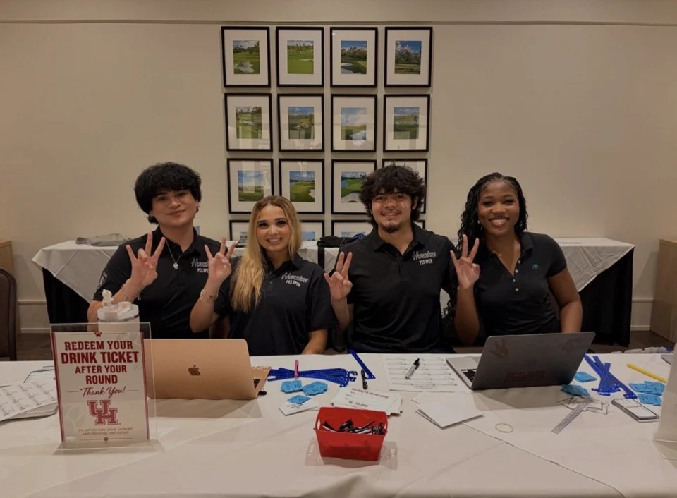
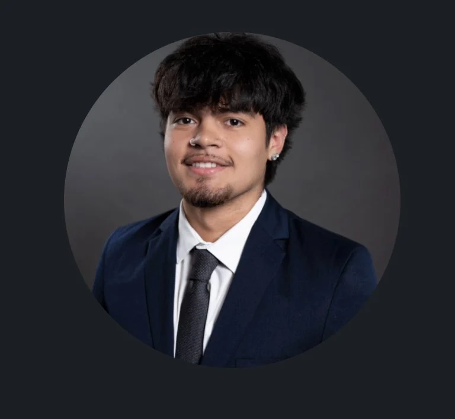
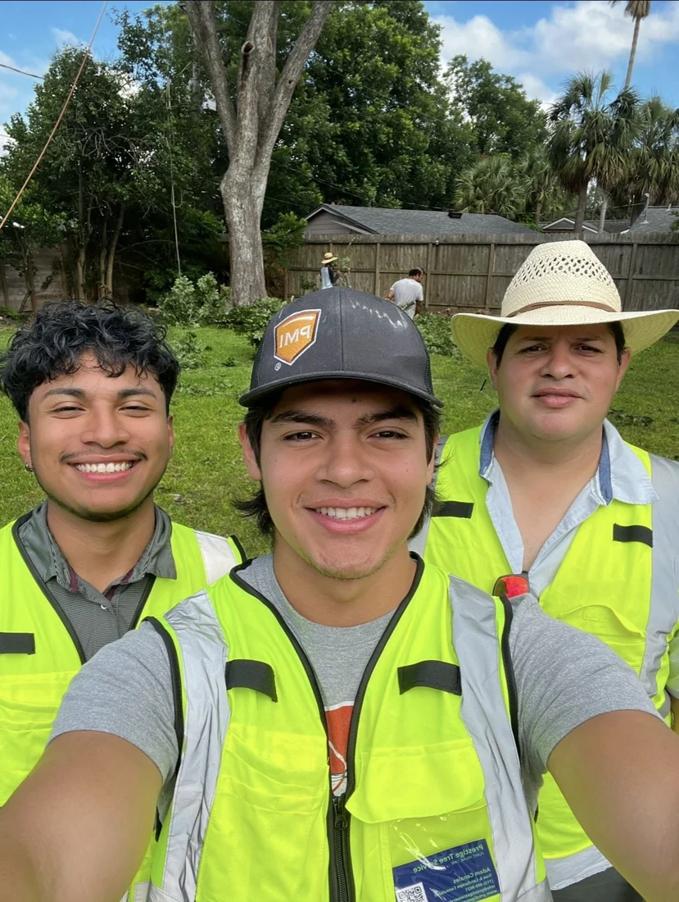
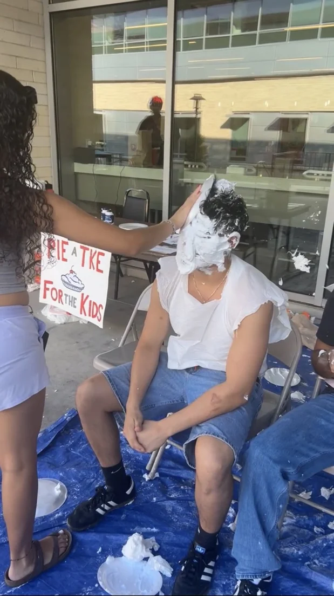

Teamwork
PES Open
When player registrations didn’t appear correctly, I coordinated with teammates to check players in manually and keep the line moving.
University of Houston · Finance
I build trust by asking good questions, listening closely, and following through.
I’m a finance student and aspiring sales professional in Houston, graduating in Spring 2028. I’m looking to connect with recruiters and sales managers hiring for B2B sales internships, as well as sales professionals in the Houston and UH networks who are open to sharing career advice.

Experience

Summers 2024 & 2025
Tree Sales Associate
I approached 100–150 doors on a typical day, introduced our services, and listened to what homeowners needed. When someone wanted an estimate, I gathered contact information, documented the scope, and shared photos with our sales team so they had the details to follow up.
Those conversations taught me to adapt my approach, handle rejection professionally, and make the next step clear.
The 12,000 figure estimates door approaches across two summers using 100 approaches per day, five days per week, and 12 weeks per summer.

Teamwork
When player registrations didn’t appear correctly, I coordinated with teammates to check players in manually and keep the line moving.

Community
Through Tau Kappa Epsilon, I personally raised more than $900 and volunteered at our Pie a TKE event.
Strengths
My door-to-door experience helps me start conversations with new customers, ask what they need, and give the team clear details for the next conversation.
I study finance at UH and am working toward 220 hours of live training through the Program for Excellence in Selling. I bring an interest in how customers weigh costs and benefits, along with practice asking questions and handling objections.
At Target, I picked, packed, and staged orders while helping customers find products. Volunteering at Small Steps Nurturing Center taught me to stay patient and communicate clearly when someone needs help.
“Aidan is the kind of person who makes every team better simply by being a part of it...”
Contact
If you’re hiring for a B2B sales internship, I’d welcome a short conversation about how my prospecting experience and follow-through could support your team. I’d also love to hear from sales professionals who are open to sharing how they got started.